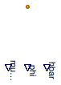

Table of Contents
- User's Guide
- BCs
- Sensors
- Assemblies
- Regions
- Subregions
- Connectors
- Characteristics
- Units
- Quantities
- BaseClasses
Download
- Latest: FCSys-2.0.zip (**Please check back soon or contact kdavies4 at gmail.com.)

| Name | Description |
|---|---|
| Species | Sensors for the ChemicalInput connector |

| Type | Name | Default | Description |
|---|---|---|---|
| Integer | n_lin | 1 | Number of components of linear momentum (nlin) |
| Type | Name | Description |
|---|---|---|
| ChemicalInput | chemical | Single-species connector for material |
| output RealOutput | muPerT | Internal signal for quotient of electrochemical potential and temperature [1] |
| output RealOutput | phi[n_lin] | Internal signal for velocity of the source [l/T] |
| output RealOutput | hbar | Internal signal for massic enthalpy of the source [l2/T2] |
model Species "Sensors for the ChemicalInput connector" extends FCSys.BaseClasses.Icons.Sensor; parameter Integer n_lin( final min=1, final max=3) = 1 "Number of components of linear momentum (nlin)";FCSys.Connectors.ChemicalInput chemical(final n_lin=n_lin) "Single-species connector for material"; FCSys.Connectors.RealOutput muPerT(final unit="1") "Internal signal for quotient of electrochemical potential and temperature"; FCSys.Connectors.RealOutput phi[n_lin](each final unit="l/T") "Internal signal for velocity of the source"; FCSys.Connectors.RealOutput hbar(final unit="l2/T2") "Internal signal for massic enthalpy of the source"; equation // Measurements muPerT = chemical.muPerT; phi = chemical.phi; hbar = chemical.hbar; // Conservation (no storage) 0 = chemical.Ndot "Material"; zeros(n_lin) = chemical.mPhidot "Linear momentum"; 0 = chemical.Hdot "Energy";end Species;